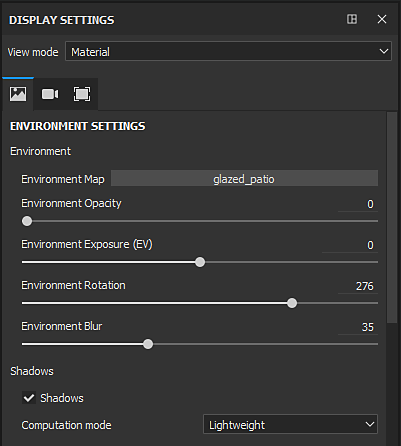
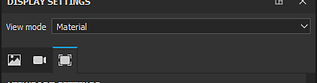

The Display Settings window regroups the environment, camera and viewport settings. These settings are global to the project and can affect the look of the viewport.

The view mode controls how the viewport will look. The dropdown is divided into three sections:
| Section | Description |
|---|---|
| Lighting | Display the 3D model in the viewport with full lighting, including shadows if enabled. |
| Single channel | Also called solo mode. Display the mesh in the viewport with only a specific channel or texture without lighting. |
| Mesh maps | Display the mesh in the viewport only with a specific baked textures without lighting. |
For more details about each section see the dedicated page :